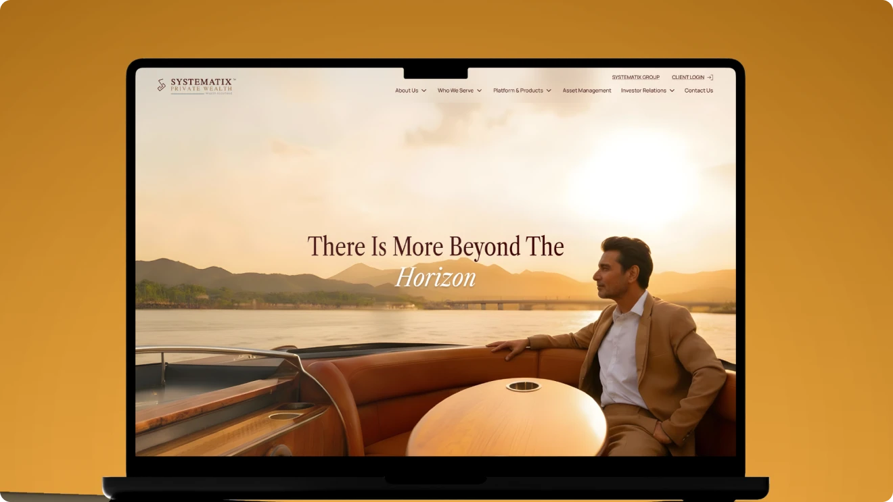

Crafting a Digital Experience for Modern Wealth Stewardship
A bespoke, institutional-grade wealth advisory web experience designed by Pratik Bachhav for Systematix Private Wealth, catering to high-net-worth individuals (HNWIs), multi-generational family offices, and corporate treasuries.
Uncovering the Problem
Traditional wealth management platforms in India often appeared either overly clinical and dated, or excessively commercial. Systematix needed a sophisticated digital presence that exudes prestige, trust, discretion, and bespoke stewardship for portfolios exceeding ₹25+ Crores.
- ! High drop-off during data intake and report comprehension
- ! Cluttered numerical interfaces leading to decision paralysis
- ! Lack of actionable, personalized next steps for users
How I Approached It
I led the end-to-end design sprint from discovery interviews to high-fidelity prototyping, emphasizing cognitive ease, visual hierarchy, and instant value delivery.
- ✓ Designed a luxury editorial aesthetic utilizing refined serif typography, high-contrast dark accents, and subtle glassmorphic depth.
- ✓ Built structured product pathways for Family Office Governance, Alternative Investment Funds (AIF), PMS, and Global Estate Planning.
- ✓ Engineered private portfolio advisory booking flows equipped with confidential NDA verification and direct relationship manager scheduling.
- ✓ Constructed a robust responsive grid system that displays perfectly on high-resolution executive desktop displays and private mobile devices.


“Institutional wealth is built on trust and longevity. The digital experience for Systematix reflects quiet luxury, intellectual rigor, and unwavering reliability.”